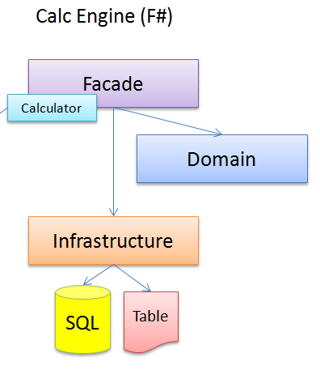

From OOP to FP : About dependency injection and higher-order functions
This is the next part of the series "My 2 weeks trip from OOP to FP"
To keep track of previous posts, here's a little toc:
I don't know if this is the case for everybody but when you start to learn a new language you try to think about all the things that you've learnt with a language you use on the daily basis. You would like to apply all the design patterns and techniques that you've always used with success (or not). This is not always possible because design patterns are not universal for every language as you may think of it. Design patterns are tied to some paradigm and thus only applicable in the context of that paradigm. In short, the design patterns are only valid in the context of the paradigm followed by the given language. I'm talking here about Object Oriented Paradigm (OOP) and Functional Paradigm (FP). Furthermore, you can read about this in the wikipedia definition as well:
...Object-oriented design patterns typically show relationships and interactions between classes or objects, without specifying the final application classes or objects that are involved. Patterns that imply object-orientation or more generally mutable state, are not as applicable in functional programming languages...
The same rule applies to some of the S.O.L.I.D. principles. While the application of the SRP may be easily transposed to FP (you just have to replace the word "class" by "function" in the principle's description; "a class should have only a single responsibility.", it's not the case for other principles.
I would like to focus here on a pattern called "Dependency Injection" that is one method of achieving DIP in SOLID. Before asking why I want to focus on that topic in the context of F# let's recall what DI allows (from wiki):
Dependency injection is a software design pattern that allows the removal of hard-coded dependencies and makes it possible to change them, whether at run-time or compile-time...
Reading on further:
...This can be used, for example, ...or to choose stubs or mock objects in test environments vs. real objects in production environments...
Well, now we have a big picture of the benefits of using a Dependency Injection pattern in OOP language like C#. It's so popular these days, that when a team is starting a new project you have to rather justify why you don't want to use DI rather than why you're using it. Folks are even not asking themselves if they need it at all. They just pick up an DI framework, throw it into the project and continue without even thinking about.
But what's important when you're starting to use a functional programing language like F# is that you would like to have the same benefits that offer DI for OO language:
- Decoupling by removing hard coded dependencies
Before going further let's recall the context why I'm talking about.
Context
In my previous post "Sharing code between C# and F#" I've touched upon the architecture I set up for my C# and F# project. Comparing both of them we see clearly that the MVC (C#) project follows the Dependency Inversion principle and the Calc Engine (F#) part does not. In this post we'll focus on the F# part which looks like that:

It seems like this is the classic layered architecture used 10 years ago. But this is straightforward and seemed to me appropriate to start with F#. (I would be grateful to all F# experts to point me on the right tracks if this is what should be done differently). This is closely related to the nature of the relation that dependencies has in OO and Functional languages.
Composition happens on different levels
As I said, one way of achieving decoupling is getting rid of hard coded dependencies and to depend on abstractions. In OO languages the composition is more "coarse" grained as it happens on the object level. Objects are composed into graphs and relations between objects and graphs are dependencies. That's why respecting the SRP principle is very important because one object depends on another because of the functionality it can provide to the calling object. If the objects that we depend on, carry more functionalities, it may be also involved in dependencies with other objects which makes the dependency graph more complicated.
In F# the composition happens at the function level. For me it's a "fine" grained composition because well written functions have generally a single responsibility. Comparing to C# is like we would like to compose methods and not objects (I'm not saying that a method in C# == function in F#).
Knowing these two facts we may ask ourselves if "Dependency Injection" pattern makes any sense when related to the functional programming language. Dependency Injection is a pattern related to the OOP and it's related to component composition which in that case are "objects". So I can surely state that:
Dependency injection is a nonsense in FP
You may say that you've been reading through all this post just to discover the statement above which is obvious for everybody. But I want to stress that when you come to the new programming paradigm you'd be better living all your habits and patterns outside. Forgot about them and try to learn from the beginning. You'll find ways to achieve what you want using patterns related to the given context.
Achieving decoupling in F#
If you look at the schema above, you will notice that I'm dealing here with Infrastructure Layer that deals with database access. I would like to not have a hard dependency on because when I'm testing my Facade layer I don't want to deal with a real database and Windows Azure storage. I'm a noob in F# programming but what I've learnt until now, allows me to think that I could use a higher-order functions and partial application to achieve a kind of decoupling.
Higher-order functions and partial application
To put it simply, Higher-order function refers to a function that takes a function as a parameter or returns it as a result. Higher-order functions are a way to write generic functional code, which means that the same code can be reused for many similar but distinct purposes.
However the concept of partial application it's easier to explain with an example. Let's declare a function that takes 2 parameters and returns the sum of both:
1: 2: |
> let add a b = a + b;; val add : a:int -> b:int -> int |
The function signature a:int -> b:int -> int indicates exactly that case (two integers as parameter and an integer as return value). In F#, there is a concept called "Partial application" that allows the caller to no pass every argument to the function. What’s happens in that case is that F# creates another function. Let’s see another example:
1: 2: |
> let add10 = add 10;; val add10 : (int -> int) |
What happens is that we define a function called add10 which adds 10 to whatever the second argument will be. This function is the result of a partial application on the function add because we have passed only one argument instead of two. The signature just shows it (int -> int). This concept is very powerful, because we can just call add10 function in some later point in time when the second parameter will be available. So now we can call the add10 function in this way to obtain a result:
1: 2: |
> add10 12;; val it : int = 22 |
We call the function passing in 12 and the results is of 22 which is the correct (10 + 12 = 22). The partial application is also a concept broadly used with pipelining.
But how this can be useful with decoupling between layers?
Let's check how Dependency Injection is done in C#:
public class Caluclator : ICaluclator
{
private readonly IApplicantRepository _applicantRepository;
private readonly IAttributeRepository _attributeRepository;
public Caluclator(IApplicantRepository applicantRepository,
IAttributeRepository attributeRepository)
{
if (applicantRepository == null)
throw new ArgumentNullException("applicantRepository");
if (attributeRepository == null)
throw new ArgumentNullException("attributeRepository");
_applicantRepository = applicantRepository;
_attributeRepository = attributeRepository;
}
public IEnumerable<string> Calculate(int itemId)
{
var attributes = _attributeRepository
.GetAttributesForItem(itemId);
var applicants = _applicantRepository
.GetApplicantsByAttributes(attributes);
// do some calculation on applicants.
return applicants.Select(x => x.Name);
}
} |
The code is quite straightforward and I don't think it needs much explanation. The dependencies are passed to the class' constructor and used when a method Calculate is invoked. What's interesting, is that if we want to test the Calculate method, we have to create an instance of our calculator passing in to the constructor faked dependencies.
It's something that I tried to achieve in my F# implementation. If you look at the schema above you'll notice that it is interesting to keep decoupling for the Facade and Domain layers. Let's focus on the Facade layer as it has a dependency on Infrastructure layer and the persistence.
First of all let's define our Calculate method:
1: 2: 3: 4: |
let calculate getApplicantsFunc getAttributsFunc itemId = let attributes = getAttributsFunc itemId let applicants = getApplicantsFunc attributes applicants |
What we have here is a function taking as parameters two functions and an itemId. The signature of the functions is as follows: (('a -> 'b) -> ('c -> 'a) -> 'c -> 'b).
Then we can define our calculator function like this:
1: 2: |
let calculator getApplicantsFunc getAttributsFunc = calculate getApplicantsFunc getAttributsFunc |
The calculator function is derived from the calculate function because we just pass a two parameters instead of three. We don't pass itemId so the compiler concludes that calculator must be also a function. This is a partial application at play. Let's look on the calculator function signature : ('a -> 'b) -> ('c -> 'a) -> ('c -> 'b)
We notice that the last parameter which is a return value indicates that it's a function. What's interesting is that we are declaring our calculator function the same way as we've declared our Calculator class in C#, passing in two dependencies that we want to mock for unit testing for example.
All these definitions I've wrapped inside a kind of Facade type that will be shared with C# code. It looks like that:
1: 2: 3: 4: 5: 6: 7: 8: 9: 10: 11: 12: 13: |
type Calculator() = let calculate getApplicantsFunc getAttributsFunc itemId = let attributes = getAttributsFunc itemId let applicants = getApplicantsFunc attributes applicants member v.calculator getApplicantsFunc getAttributsFunc = calculate getApplicantsFunc getAttributsFunc interface ICalculator with member v.Calculate itemId = v.calculator getApplicantFromDb getAttributesFromDb itemId |
You notice that the type Calculator() implements an interface ICalculator shared from C# code. This interface defines one method (function) Calculate where we call our calculator passing in two functions from the F# persistance layer getApplicantFromDb and getAttributesFromDb and also an itemId. The method (function) Calculate has a hard dependency on theses two methods from persistence layer but it doesn't matter because it's not at that level that I want to test. This is only here for C# sharing and will be only visible from C#.
What I want to test is my internal calculator defined like this:
1: 2: |
member v.calculator getApplicantsFunc getAttributsFunc = calculate getApplicantsFunc getAttributsFunc |
Now you can see that all we want is to have a calculator function with different kind of dependencies. Let's see how it works. Before I'll show you to possible of implementation for the dependencies.
Simulation of the dependencies of the real world:
1: 2: 3: 4: 5: |
let getAttributesFromDb itemId = [itemId..(itemId + 10)] let getApplicantFromDb attributes = attributes |> List.map (fun i -> "applicant" + i.ToString()) |
You have to imagine that these two functions access to the real database to get data. Here I've just declared some data for test.
We can also have a faked functions like that:
1: 2: 3: 4: 5: |
let getAttributesFromDbFake itemId = [itemId..(itemId + 100)] let getApplicantFromDbFake attributes = attributes |> List.map (fun i -> "stubedApplicant" + i.ToString()) |
It's quite similar to the previous except that I named it with a prefix suffix Fake and the 100 is added to the generating list instead of 10 like in the previous declaration. But it's not the point. Let's say that these are the fake functions for testing.
Now I can check how my calculator behaves with a real implementation in F# Interactive:
1: 2: 3: 4: 5: 6: 7: 8: 9: 10: 11: 12: 13: |
> let calc = new Facade.Calculator();; val calc : Facade.Calculator > let calculator = calc.calculator getApplicantFromDb getAttributesFromDb;; val calculator : (int -> string list) > calculator 10;; val it : string list = ["applicant10"; "applicant11"; "applicant12"; "applicant13"; "applicant14"; "applicant15"; "applicant16"; "applicant17"; "applicant18"; "applicant19"; "applicant20"] |
As you can see the result is taken from the "real" implementation of my functions. But if I want to test my calculator implementation I could pass in a fake functions:
1: 2: 3: 4: 5: 6: 7: 8: 9: 10: 11: 12: 13: 14: 15: 16: 17: 18: 19: 20: 21: 22: 23: 24: 25: 26: 27: 28: 29: 30: 31: 32: 33: 34: 35: 36: 37: 38: 39: 40: |
> let calculator = calc.calculator getApplicantFromDbFake getAttributesFromDbFake;; val calculator : (int -> string list) > calculator 10;; val it : string list = ["stubedApplicant10"; "stubedApplicant11"; "stubedApplicant12"; "stubedApplicant13"; "stubedApplicant14"; "stubedApplicant15"; "stubedApplicant16"; "stubedApplicant17"; "stubedApplicant18"; "stubedApplicant19"; "stubedApplicant20"; "stubedApplicant21"; "stubedApplicant22"; "stubedApplicant23"; "stubedApplicant24"; "stubedApplicant25"; "stubedApplicant26"; "stubedApplicant27"; "stubedApplicant28"; "stubedApplicant29"; "stubedApplicant30"; "stubedApplicant31"; "stubedApplicant32"; "stubedApplicant33"; "stubedApplicant34"; "stubedApplicant35"; "stubedApplicant36"; "stubedApplicant37"; "stubedApplicant38"; "stubedApplicant39"; "stubedApplicant40"; "stubedApplicant41"; "stubedApplicant42"; "stubedApplicant43"; "stubedApplicant44"; "stubedApplicant45"; "stubedApplicant46"; "stubedApplicant47"; "stubedApplicant48"; "stubedApplicant49"; "stubedApplicant50"; "stubedApplicant51"; "stubedApplicant52"; "stubedApplicant53"; "stubedApplicant54"; "stubedApplicant55"; "stubedApplicant56"; "stubedApplicant57"; "stubedApplicant58"; "stubedApplicant59"; "stubedApplicant60"; "stubedApplicant61"; "stubedApplicant62"; "stubedApplicant63"; "stubedApplicant64"; "stubedApplicant65"; "stubedApplicant66"; "stubedApplicant67"; "stubedApplicant68"; "stubedApplicant69"; "stubedApplicant70"; "stubedApplicant71"; "stubedApplicant72"; "stubedApplicant73"; "stubedApplicant74"; "stubedApplicant75"; "stubedApplicant76"; "stubedApplicant77"; "stubedApplicant78"; "stubedApplicant79"; "stubedApplicant80"; "stubedApplicant81"; "stubedApplicant82"; "stubedApplicant83"; "stubedApplicant84"; "stubedApplicant85"; "stubedApplicant86"; "stubedApplicant87"; "stubedApplicant88"; "stubedApplicant89"; "stubedApplicant90"; "stubedApplicant91"; "stubedApplicant92"; "stubedApplicant93"; "stubedApplicant94"; "stubedApplicant95"; "stubedApplicant96"; "stubedApplicant97"; "stubedApplicant98"; "stubedApplicant99"; "stubedApplicant100"; "stubedApplicant101"; "stubedApplicant102"; "stubedApplicant103"; "stubedApplicant104"; "stubedApplicant105"; "stubedApplicant106"; "stubedApplicant107"; "stubedApplicant108"; "stubedApplicant109"; ...] |
You can see that the result is quite different and comes from stubbed functions. We've achieved the same functionality that we are used to in OOP world with DIP and Dependency Injection.
In closing
The dependency injection pattern is much more powerful in OOP that what I've described here. Lifetime-managment of dependencies, graph composition and so on. What we were interested in is the decoupling that adoption of that pattern brings to the table. Moreover, lifetime-managment of dependencies is not necessary in F# because anyway all is immutable and everything gets it's own copy so we don't need to worry about this aspect. Graph composition is not something very useful in F# either. We've just simulated similar concept as dependency injection by using higher-order functions and partial application.
As disclaimer I would say that I'm still exploring and learning F#. So for a really experienced F# developer it might seem totally incorrect what I've written here. I would be really grateful to here your feedback and if I'm not correct I'll make an update to my post. So don't take all what I'm saying here as a standard or a way for doing things. For me it worked well but I would be very happy to hear how others do.
val int : value:'T -> int (requires member op_Explicit)
Full name: Microsoft.FSharp.Core.Operators.int
--------------------
type int = int32
Full name: Microsoft.FSharp.Core.int
--------------------
type int<'Measure> = int
Full name: Microsoft.FSharp.Core.int<_>
module List
from Microsoft.FSharp.Collections
--------------------
type List<'T> =
| ( [] )
| ( :: ) of Head: 'T * Tail: 'T list
interface IEnumerable
interface IEnumerable<'T>
member Head : 'T
member IsEmpty : bool
member Item : index:int -> 'T with get
member Length : int
member Tail : 'T list
static member Cons : head:'T * tail:'T list -> 'T list
static member Empty : 'T list
Full name: Microsoft.FSharp.Collections.List<_>
Full name: Microsoft.FSharp.Collections.List.map
val string : value:'T -> string
Full name: Microsoft.FSharp.Core.Operators.string
--------------------
type string = System.String
Full name: Microsoft.FSharp.Core.string
Full name: Microsoft.FSharp.Collections.list<_>